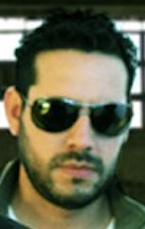

ABOUT DIVISION URBANA
Our Story
División Urbana is a Nicaraguan rock band formed in 1999 and reaching international acknowledgement with their hit “Cuando La Mañana”. By blending Nicaraguan flavor and culture to their lyrics, its one of the nation's top musical groups that claims “No Covers” by playing their own songs. The band blends rock with powerful, socially conscious lyrics that reflect the struggles, emotions, and realities of their community. From day one, Division Urbana has been committed to creating music that inspires, challenges, and awakens awareness.
Meet the Band
Orlando Marco
Vocals/Guitar

Noel Noguera
Drums
Ben Benoit
Bass
Timeline
- 2006: Release of debut album: Division Urbana (August 17, 2006)
- 2009: Release of second album: Ángeles de Mármol (September 26, 2009)
- 2025: Release of third album: Los Primeros Años (2025)